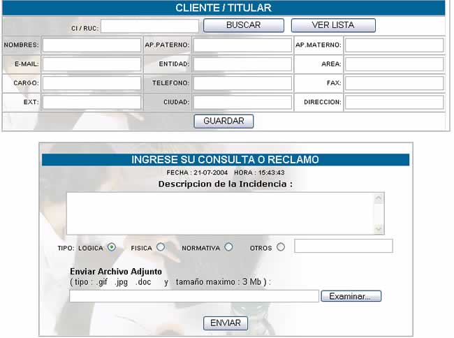

REGISTRAR ORDEN
Esta opción le sirve para solucionar un
problema o realizar una consulta, al hacer click sobre esta pestaña usted podrá
ver la siguiente pantalla:

Para identificarse con su empresa puede
digitar su Número de RUC, o en su defecto puede introducir el número de su
Carnet de Identidad.
Haga click en Buscar para ver los datos
asociados al Número, y posteriormente en Guardar para registrar los cambios.
También puede llenar automáticamente el CI/RUC
haciendo click en Ver Lista y seleccionando el que corresponde.
Llene los datos de su Consulta o Reclamo, de
acuerdo a la siguiente descripción:
Fecha y Hora;
datos del sistema.
Descripción de la Incidencia; en este campo usted podrá hacer todas las consultas
que tenga, pudiendo ser: reclamos, denuncias, dudas operativas, técnicas, de
normatividad, aplicación, obtención de información, desarrollo, etc.
Tipo; de acuerdo a descripción de la incidencia esta puede ser Lógica,
Física, Normativa, Otro.
Enviar Archivo Adjunto; con esta opción puede mandar algún archivo que valide
su reclamo.
Después de haber seguido todos estos pasos
usted habrá creado una nueva orden de trabajo.
El coordinador de la mesa de ayuda, en base
a su reclamo o consulta, asignará su orden de mesa a un especialista para que
le dé una solución o respuesta.